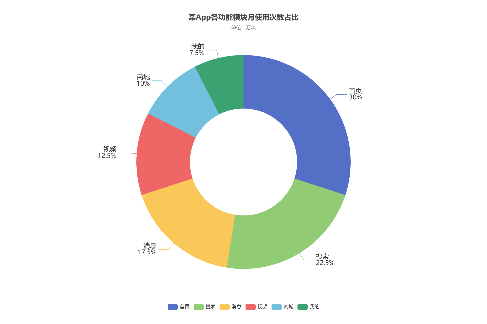

实验目的
理解内外半径与环形图的实现方式。
实验数据
| 模块 | 使用次数 / 万次 |
|---|---|
| 首页 | 1200 |
| 搜索 | 900 |
| 消息 | 700 |
| 视频 | 500 |
| 商城 | 400 |
| 我的 | 300 |
实现要点
- radius: [33%, 66%] 指定内半径和外半径，在中心留出空白。
- 六个功能模块共使用 4000 万次，首页占 30%。
运行结果


完整配置
var option = {
title: {
text: '某App各功能模块月使用次数占比',
subtext: '单位：万次',
left: 'center',
top: 30
},
tooltip: {
trigger: 'item',
formatter: '{b}：{c} 万次（{d}%）'
},
legend: {
bottom: 30,
data: ['首页', '搜索', '消息', '视频', '商城', '我的']
},
series: [{
name: '月使用次数',
type: 'pie',
radius: ['33%', '66%'],
center: ['50%', '50%'],
label: {
show: true,
position: 'outside',
formatter: '{b}\n{d}%',
fontSize: 16
},
labelLine: { show: true, length: 20, length2: 25 },
data: [
{ value: 1200, name: '首页' },
{ value: 900, name: '搜索' },
{ value: 700, name: '消息' },
{ value: 500, name: '视频' },
{ value: 400, name: '商城' },
{ value: 300, name: '我的' }
]
}]
};
myChart.setOption(option);